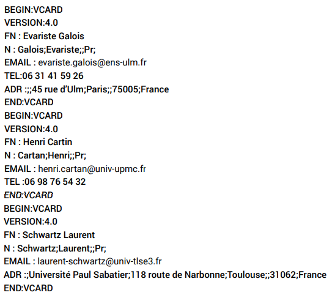

Le but de cette activité est de se familiariser avec un type de données structurées très important : le fichier vCard.
Ce format de fichier est un format standard ouvert d’échange de données personnelles au format de carnet d’adresses qui peut
contenir une ou plusieurs adresses. Lorsqu’un fichier vCard ne contient qu’une seule adresse, nous parlons plus naturellement
de carte de visite.
Bien sûr, que ce soit un carnet d’adresses ou une simple carte de visite, tout ceci est purement virtuel...
Un fichier vCard est lisible par n'importe quel éditeur de texte, mais nous utiliserons Notepad++
Télécharger le fichier
Avant de commencer, effectuez une recherche sur les vCard.
Indiquer où s’utilise ce type de fichier.
Indiquer quelle est l’extension d’un fichier vCard.
En utilisant le fichier "Evariste_Galois", répondre aux questions suivantes par groupe de deux élèves.
Un carnet d’adresses est un fichier vCard contenant une ou plusieurs cartes de visites virtuelles, chacune étant délimitée par les instructions BEGIN : VCARD et END : VCARD.
Vous avez à votre disposition le fichier vCard suivant:
La liste des contacts d’un individu dont on ignore tout a priori a été récupérée. Le fichier fichier_contacts.pdf fourni est une partie de cette liste.